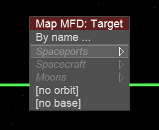
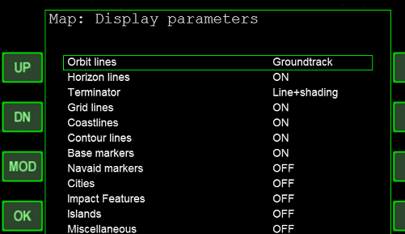
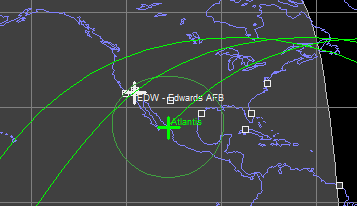
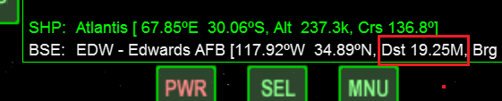
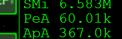

Shuttle Fleet AutoFCSによる再突入
Shuttle Fleetでは、AutoFCSを使用して再突入から着陸までを自動で実行できます。
選択可能な基地
| EDW | エドワーズ空軍基地 |
| KSC | ケネディ宇宙センター（ケープ・カナヴェラル） |
| VBG | ヴァンデンバーグ空軍基地 |
| ZZA | サラゴサ空軍基地 |
以上の4つから着陸地点を選ぶことができます。
準備
以下の記事を参考に、Shuttle Fleetと必要なMODをインストールしてください。
Shuttle Fleet v4.8とAutoFCSのインストール
AutoFCSの機能に影響はありませんが、Map MFDにおけるサラゴサ基地（ZZA）の位置が誤って表示されるバグがあります。
Orbiter\Config\Earth\BaseフォルダにあるZZA.cfgを削除すれば正しく表示されます。
再突入の手順
基本的な考え方はチュートリアルの内容とほぼ同じです。
チュートリアルPart7 軌道離脱と再突入の準備
Map MFDを起動する。
TGTをクリック。
矢印キーでSpaceports（宇宙港）の一覧の中から、上記4つのどれかを選んでEnterを押す。

DSPをクリックしてから、MODをクリック。
Groundtrackを選んでOKをクリック。

あと1周で最接近するタイミングを待つ。※

※ある程度ずれていても、AutoFCSがコースを修正してくれるので問題ありません。
Map MFD右下のDst（目標地点までの距離）が一番遠くなる（数字が減りはじめる）のを待つ。※

※ほとんどの場合、インド洋の上空になるはずです。
Retrogradeオートパイロットを使ってうしろを向く。
エンジンを噴射して、Peを60km程度まで下げる。

Ctrl+F4を押してAutoFCSを開く。
Map MFDで指定したのと同じ基地を選択する。
着陸前にCtrl+Gを押して、ランディングギアを待機状態にしておく。
手動で着陸したい場合は、最後のターンの手前でUを押してAutoFCSを解除してください。